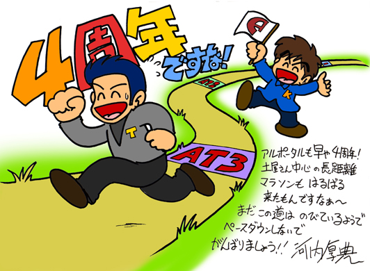

アルトネリコシリーズに関わって頂いた関係者の皆様より、アルポータル４周年記念祝辞を頂きました！このページでは皆様から頂いきました祝辞を公開します！
◆アルトネリコシリーズイラストレーター凪良様より祝辞を頂きました◆
◆ntny様より祝辞を頂きました◆
このページのコンテンツには、Adobe Flash Player の最新バージョンが必要です。
◆HD(1280×720)はこちら◆
◆アルトネリコシリーズプロデューサー河内 厚典様より祝辞を頂きました◆

©GUST CO.,LTD. ©NBGI